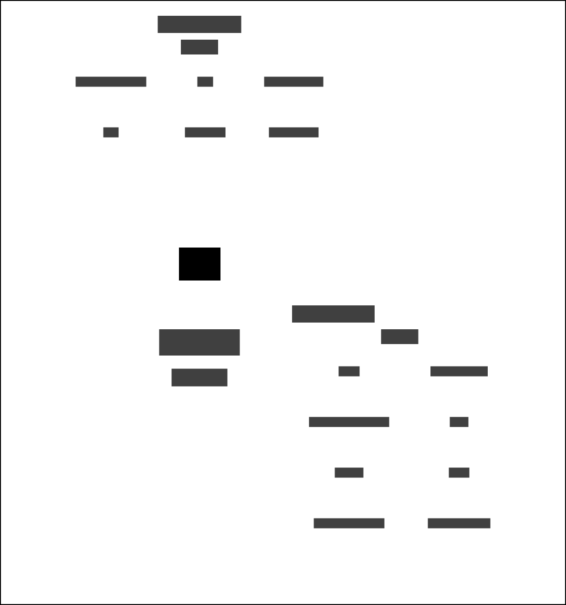

Risk Assessment Scores to Delius
Updates risk assessment scores in Delius following assessments in the OASys Offender Assessment system.
This integration service listens for domain events generated by OASys and updates Delius with changes to the following risk scores:
- Risk of serious recidivism (RSR) / Combined Serious Reoffending Predictor (CSRP)
- OASys sexual reoffending predictor (OSP) / Sexual Reoffending Predictor (SRP)
- Offender group reconviction scale (OGRS) / All Reoffending Predictor (ARP)
The scores are updated when an OASys risk assessment is submitted for a Person on Probation.
Business need
Helps the business users understand the actuarial risk predictors within the Delius user interface.
Data dependencies
This integration service is used to update the RSR and OSP risk scores in Delius. The service will also add/update scores from OGRS risk assessments for a Person on Probation and an Event in Delius.
Context map - Risk Assessment Data

Workflows
| Business Event | Message Event Type/Filter |
|---|---|
| Risk scores updated | risk-assessment.scores.rsr.determined |
| Risk assessment | risk-assessment.scores.ogrs.determined |
Risk Score Workflow
Two types of scores are provided in the risk score data: risk of serious recidivism (RAR) and OASys sexual reoffending predictor (OSP). The scores are updated in Delius.

OGRS Risk Assessment Workflow
An OGRS risk assessment is conducted for a Person on Probation for a specific Event. The offender group reconviction scale (OGRS) score is stored or updated in Delius when the risk assessment is submitted.

Interfaces
Message Formats
The service responds to HMPPS Domain Event messages via the Risk Assessment Scores and Delius Queue.
Example messages are in the development source tree.
Incoming messages are filtered on eventType by
the SQS queue policy
OASys Domain Event
Sample message:
{
"eventType": "risk-assessment.scores.rsr.determined",
"version": 1,
"description": "Risk assessment scores have been determined",
"detailUrl": "https://some-url-where-we-can-get-more-info-this-might-not-exist",
"occurredAt": "2022-09-22T12:16:04+01:00",
"additionalInformation": {
"RSRScore": 69.42,
"RSRBand": "V",
"RSRStaticOrDynamic": "DYNAMIC",
"OSPIndecentScore": null,
"OSPIndecentBand": null,
"OSPContactScore": null,
"OSPContactBand": null,
"OSPIndirectIndecentScore": 3.33,
"OSPIndirectIndecentBand": "M",
"OSPDirectContactScore": 12.77,
"OSPDirectContactBand": "V",
"SNSVStaticYr2": null,
"SNSVStaticYr2Band": null,
"SNSVDynamicYr2": 53.32,
"SNSVDynamicYr2Band": "V",
"RSRAlgorithmVersion": 6,
"EventNumber": 1,
"AssessmentDate": "2025-12-19T14:44:43+00:00"
},
"personReference": {
"identifiers": [
{
"type": "CRN",
"value": "X552020"
}
]
}
}